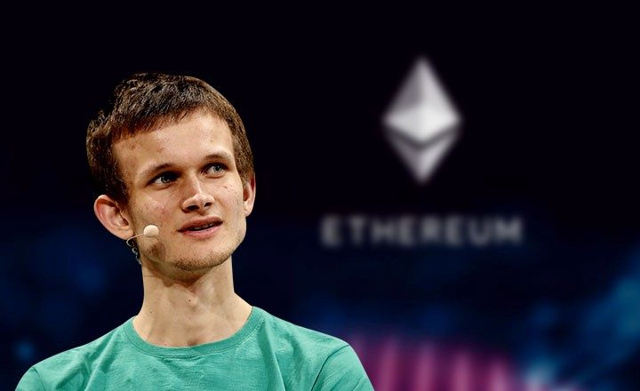

Vitalik Buterin
Imagem retirada desta fonte
⚠ Disclaimer: esse episódio não é uma recomendação de investimento e tem cunho apenas educacional.
Ano passado foi introduzida uma inovação no sistema bancário brasileiro, o chamado sistema PIX de transferência. Com a remoção de vários intermediários para a realização da transferência, o PIX foi aplaudido pelo seu baixo custo de transferência e rapidez.
De acordo com o site de Perguntas e Respostas do Banco Central do Brasil, a tecnologia do PIX usa uma estrutura tecnológica centralizada, na qual a comunicação entre os diversos participantes e o Banco Central é realizada por meio de mensageria.
Ué, e como seria uma tecnologia descentralizada? Seria possível mover a responsabilidade do controle e emissão do dinheiro para fora dos Bancos Centrais? E teríamos uma motivação para fazer isso?
Em um post realizado em 2009 pelo criador do bitcoin, foi dito:
"The root problem with conventional currency is all the trust that's required to make it work. The central bank must be trusted not to debase the currency, but the history of fiat currencies is full of breaches of that trust."
Mas seria possível então criar uma espécie de dinheiro digital sem a necessidade de um intermediário centralizado? E quais problemas tecnológicos devem ser resolvidos e como devem ser resolvidos na migração de um sistema central para um sistema descentralizado?
Há muitos anos esse foi um problema discutido na academia, porém só em 2009 o problema foi resolvido na prática por Satoshi Nakamoto — cuja identidade é um mistério até hoje. Uma das principais inovações introduzidas pelo enigmático Nakamoto foi o conceito de um livro-razão distribuído entre computadores cujo consenso é atingido via um mecanismo chamado proof-of-work (PoW).
São muitos termos né! Vamos dar apenas um gostinho do que se trata cada um desses termos, de forma bem simplificada, mas recomendamos ao ouvinte ler o material extra em nosso site para que possa apreciar com mais profundidade os detalhes que tornam o problema bem complexo e também os detalhes que mostram a genialidade da solução.
Um livro razão é onde as transações de entrada e saída são registradas. Claramente, estas transações devem ser feitas em ordem, ou as pessoas poderiam gastar dinheiro que não possuem.
Uma solução possível para organizar a ordem das transações é deixar o livro-razão nas mãos de uma só pessoa que seria responsável por isso — porém, se essa pessoa cair na tentação e for desonesta, então é possível que ela bagunce as ordens ou crie ordens falsas para seu próprio e exclusivo benefício.
Uma forma de contornar esse problema é fazer com que cada pessoa tenha seu próprio livro-razão, mas aí surge um problema: como garantir que haverá sincronia de informações corretas nestes livros?
Aí que entra o mecanismo de proof-of-work. As transações são registradas em blocos sequenciais e um bloco só se torna válido após a resolução de um problema computacional que demora bastante tempo para ser resolvido (ao menos estatisticamente falando). Se alguém quiser enviar e validar um bloco com transações falsas, esse sistema força o mal-intencionado a ter a concentração de um poder computacional maior do que mais de 50% das outras pessoas validando o bloco de maneira honesta.
Estas ideias revolucionárias impressionaram muita gente — inclusive o protagonista da nossa Byta História de hoje: o jovem programador russo-canadense Vitalik Buterin. Vitalik é um dos co-fundadores da platorma Ethereum, cuja criptomoeda associada, Ether, é a segunda maior criptomoeda em termos de valor de mercado (isso pelo menos no momento em que este episódio foi elaborado) e foi um dos investimentos com maior valorização este ano.
O Bitcoin usa um sistema de script para transações, chamado (surpresa!) bitcoin script. De acordo com o whitepaper escrito por Vitalik em 2013, o Ethereum se distinguiria do Bitcoin aumentando a expressividade de sua linguagem script principalmente com os seguintes pontos:
- a possibilidade de expressar loops;
- a facilidade de criar múltiplos estados; e
- a possibilidade de resgatar os dados da própria blockchain, como o número do último bloco aceito na blockchain.
Tal aumento de expressividade facilitaria programadores a criar novas aplicações financeiras e de uma maneira mais ágil. Atualmente, esses scripts de Ethereum são chamados de smart contracts ou contratos inteligentes. São frequentemente escritos na linguagem de programação Solidity, proposta inicialmente por outro co-fundador do Ethereum, o Dr. Gavin Wood.
São frequentemente escritos na linguagem de programação Solidity e tem a implantação realizada na rede do Ethereum. Esses contratos são executados por nós do Ethereum, computadores que fazem parte da rede distribuída do Ethereum.
De maneira mais precisa, e de acordo com a documentação do Ethereum:
"In the Ethereum universe, there is a single, canonical computer (called the Ethereum Virtual Machine, or EVM) whose state everyone on the Ethereum network agrees on. Everyone who participates in the Ethereum network (every Ethereum node) keeps a copy of the state of this computer. Additionally, any participant can broadcast a request for this computer to perform arbitrary computation. Whenever such a request is broadcast, other participants on the network verify, validate, and carry out (“execute”) the computation. This causes a state change in the EVM, which is committed and propagated throughout the entire network."
A ilustração acima representa como a comunicação com contratos é feita na rede do Ethereum. Emojis da ilustração pelo projeto OpenMoji (CC BY-SA 4.0)
Por meio destes contratos inteligentes, foram criadas várias plataformas na rede Ethereum que trouxeram diversas inovações, como por exemplo:
- AMMs (automated market makers): uma exchange descentralizada que não possui livro de ordens. Em vez do preço ser definido por lances, o preço é pré-definido de acordo com uma curva matemática baseada nas reservas. Pode ser usada também para recompensar usuários que ajudam na liquidez da plataforma contribuindo com reservas — quem contribui acaba recebendo uma porcentagem pelas trocas realizadas.
- Numerai: Com o lema "o torneio de data science mais difícil do planeta", Numerai é um mercado de modelos para predição de movimento de preços de ações: o usuário pode apostar uma quantidade de criptomoeda e propor um modelo na plataforma. Conforme o rendimento alcançado utilizando o modelo, o usuário pode ser recompensado ou punido com base no que foi colocado na plataforma.
- Augur: Mercado de predição onde usuários podem criar apostas de resultados de eventos que vão desde política até entretenimento. Além de ser uma plataforma de aposta, pode ser usado como hedge (proteção) contra eventos.
- Gitcoin: Uma maneira de financiar recompensas em criptomoedas para desenvolvedores por resolver tarefas e bugs em projetos open source na plataforma Github.
Todas essas inovações foram acompanhadas de novas revoluções em criptografia e segurança: a análise econômica passou a ser uma nova camada a ser considerada na análise de ataques e falhas de segurança. Isto gerou vários novos empregos e vários produtos na área de auditores de falhas de segurança em smart contracts — de fato, no site rekt.news pode se acompanhar como é frequente e quão danosos são esses ataques.
Tais avanços só puderam surgir por meio da interdisciplinaridade entre matemática, ciência da computação e economia — matérias que Vitalik sempre mostrou interesse e afinco, como iremos falar a seguir...
De acordo com sua bibliografia pessoal, Vitalik nasceu em 1994 na Rússia e se mudou para o Canadá em 2000. Na terceira série do ensino fundamental, Vitalik começou a participar de uma classe para crianças superdotadas e foi atraído pela matemática, programação e economia, os três pilares que o ajudariam mais tarde na concepção da plataforma Ethereum.
"I am truly grateful to have the opportunity to work in such an interesting and interdisciplinary area of industry, where I have the chance to interact with cryptographers, mathematicians and economists prominent in their fields, to help build software and tools that already affect tens of thousands of people around the world, and to work on advanced problems in computer science, economics and philosophy every week."
Durante a adolescência ficou revoltado com a empresa Blizzard por ter removido uma opção do seu jogo favorito — World of Warcraft — e isso acendeu nele uma chama que o fez se posicionar contra serviços centralizados, passando a defender serviços descentralizados:
"I was born in 1994 in Russia and moved to Canada in 2000, where I went to school. I happily played World of Warcraft during 2007-2010, but one day Blizzard removed the damage component from my beloved warlock's Siphon Life spell. I cried myself to sleep, and on that day I realized what horrors centralized services can bring. I soon decided to quit."
Com 17 anos, Vitalik descobriu o Bitcoin com seu pai, Dmitry Buterin, um cientista da computação. Embora cético no começo de como uma moeda sem lastro governamental poderia ter algum valor, foi ficando cada vez mais interessado na proposta e nas ideias relacionadas a Bitcoin. Começou a escrever para um blog chamado Bitcoin Weekly inicialmente com um salário modesto de $1,5 por hora.
Em 2012, obteve uma Medalha de Bronze na Olimpíada Internacional em Informática. Em 2013, visitou desenvolvedores em outros países que compartilhavam seu entusiasmo por programação. Ele voltou a Toronto no final desse ano e publicou um white paper propondo a criação do Ethereum. Ele frequentou a Universidade de Waterloo, mas a abandonou em 2014, quando recebeu a *Thiel Fellowship*, uma bolsa da fundação do empresário Peter Thiel. Essa bolsa, destinada a estudantes menores de 23 anos, oferece um total de US $ 100.000 ao longo de dois anos, bem como orientação e outros recursos para que jovens possam abandonar os estudos acadêmicos em prol de outros trabalhos. No caso do Vitalik, sua dedicação integral passou a ser o desenvolvimento da plataforma Ethereum.
Em 2018, Buterin entrou na lista Forbes de 30 antes de 30, um conjunto de pessoas com menos de 30 anos publicado anualmente pela revista Forbes reconhecendo 30 selecionados em vinte setores. Também nesse ano, Buterin recebeu um título de doutor honoris causa pela Faculdade de Negócios e Economia da Universidade de Basel, a universidade mais antiga da Suíça.
Neste mesmo ano, Vitalik entrou em contato com o economista Glen Weyl e estes escreveram o manifesto "Liberation Through Radical Decentralization". Nele é proposto a sinergia entre mecanismos descentralizados e mecanismos alternativos de votação para uma nova forma de democracia — um dos candidatos desses mecanismos é a “Votação Quadrática” (QV), na qual os cidadãos podem usar um token artificial para comprar votos ao custo do quadrado dos votos comprados nas questões que são mais importantes para eles.
Opa, mas isso não geraria mais desigualdade? E como se resolveria as compras de votos? Esses detalhes podem ser vistos no material extra do Byta História em nosso site!
Este texto foi escrito por Hugo Tadashi e adaptado por Mateus Mendelson.
Referências: